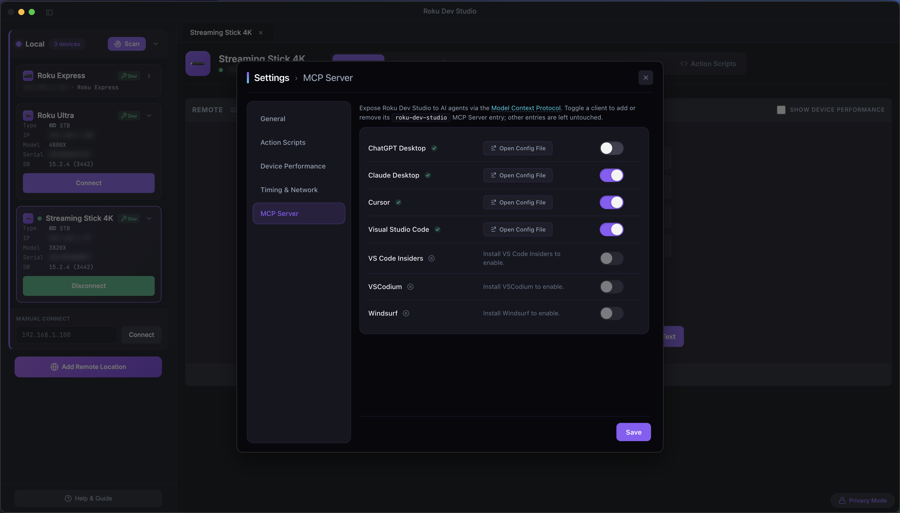

Roku Dev Studio bundles a Model Context Protocol (MCP) server so Cursor, Claude Desktop, VS Code, and other MCP clients can drive a real Roku device from inside a chat — remote control, sideload, App Connector, Network Inspector, and BrightScript debugging, all as callable tools.
127.0.0.1) using a per-launch bearer token — never over the network, and never persisted beyond a single app session.Roku Dev Studio must be running for any live tool to work. A handful of static/meta tools (list_action_types, get_action_schema, get_capability_bundle, validate_script) work even with the app closed. The first live call in a session should be probe_bridge, which returns a clear { live: false, reason } if the app isn't open yet.
Most users don't hand-edit any config. Open Settings → MCP Server in Roku Dev Studio — each row is a supported host (Cursor, Claude Desktop, VS Code, VS Code Insiders, VSCodium, ChatGPT Desktop, Windsurf). Toggling a row writes or removes only the roku-dev-studio entry in that client's own MCP config file; everything else in the file is left untouched. Hosts that aren't installed are disabled with an inline hint.

For a host not wired up by Settings, add this manually to that client's MCP config:
{
"mcpServers": {
"roku-dev-studio": {
"command": "node",
"args": ["/absolute/path/to/packages/roku-dev-studio-mcp/dist/index.cjs"]
}
}
}The server exposes two kinds of tools so an agent can pick the right one for the job instead of wrapping everything in a script:
One-shot tools that do exactly one thing and return immediately — keypresses, queries, sideload, screenshots, App Connector calls, Network Inspector reads, debugger control, and more.
validate_script + send_script_to_builder — a multi-step, conditional, or polling flow lands in the Action Scripts Builder for a human to review and run. Nothing executes automatically.
Rule of thumb: a single deterministic action is a direct op; a multi-step, conditional, polling, or save-for-later flow is an Action Script.
49 tools across five categories. Every op below also accepts an optional device (IP or serial) — omit it and the tool targets whichever device tab is focused in the app.
| Tool | What it does |
|---|---|
list_action_types | Every Action Script step type, with labels and required/optional fields |
get_action_schema | Full schema for one step type |
get_capability_bundle | The complete static catalog + authoring contract in one call |
validate_script | Validate an Action Script and return structured errors |
| Tool | What it does |
|---|---|
probe_bridge | Check whether Roku Dev Studio is up — call once per session first |
get_selected_device / list_devices / connect_device | Read or change which device is targeted |
list_app_connector_functions | The live RALE function list a channel exposes right now |
rale_get_node_by_id | Read-only SceneGraph node lookup |
send_script_to_builder | Validate + hand a script to the Builder UI for human review/run |
| Tool | What it does |
|---|---|
keypress / input_text / launch_app / deep_link | Remote control and app launching |
ecp_query / ecp_post | Raw ECP reads and writes |
sideload / delete_sideload / screenshot | Dev channel install/remove and screen capture |
scan_devices / test_connection / get_app_icon | Discovery and diagnostics |
rale_command / app_connector_connect / app_connector_disconnect | Any built-in RALE command, plus session control |
app_function | Call one of your channel's own exported functions (call list_app_connector_functions first for exact names/params) |
telnet_connect / telnet_disconnect / get_telnet_log / console_monitor_findings | Debug console access and recognized-issue parsing |
| Tool | What it does |
|---|---|
network_inspector_status | Enabled/capturing state, connected devices, MITM state |
network_inspector_list_events / network_inspector_get_event_detail | Captured traffic summaries and full request/response detail |
network_inspector_analyze | Aggregate rollups — status classes, top hosts, content types, errors |
network_inspector_get_ca_info | MITM CA fingerprint, proxy host:port, and the BrightScript trust snippet |
| Tool | What it does |
|---|---|
debugger_attach / debugger_detach / debugger_status | Open, close, and check a debug session |
debugger_wait_for_stop / debugger_continue / debugger_pause / debugger_step | Execution control — halt, resume, and step (over/in/out) |
debugger_get_callstack / debugger_get_variables / debugger_evaluate | Inspect state and evaluate BrightScript in the halted frame (REPL) |
debugger_set_breakpoints / debugger_remove_breakpoints / debugger_list_breakpoints | Manage breakpoints |
Resources: roku-dev-studio://quick-start.md, action-script-contract.md, capability-bundle.json, authoring-rules.json. Prompts: roku-one-shot-action, roku-action-script-quickstart, roku-debug-device.
validate_script rejects any script containing a literal password value.sideload's file path looks like a cloud agent sandbox path, it's rejected with an actionable error — use contentBase64 + filename instead.device; omit it and they use the focused tab, or resolve one first with list_devices / connect_device.Full source, exact parameter schemas, and design notes live in the MCP package README. Also listed on Glama and MCP Market.